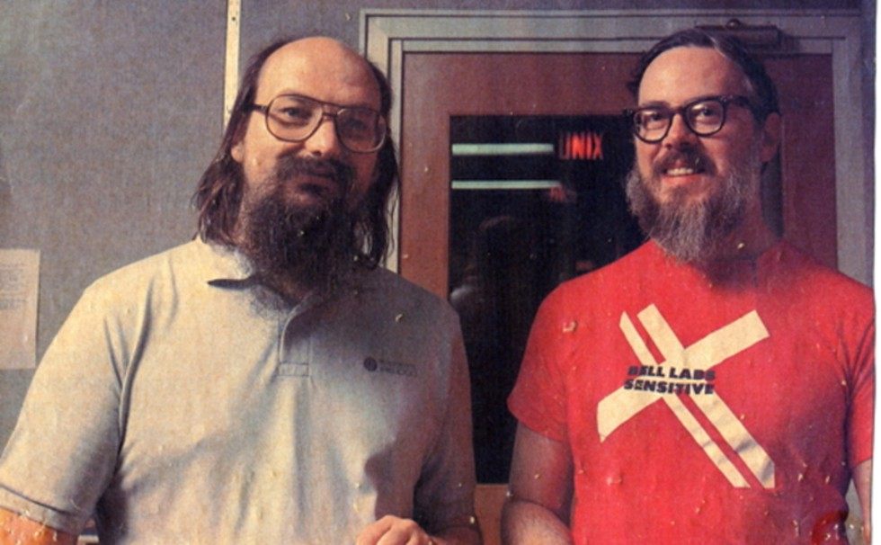

Creator of the C Programming Language and Co-creator of the Unix
operating system

Unix creators Ken Thompson and Dennis Ritchie
Here's a timeline of Dennis Ritchie's life:
1941 - born in Bronxville, New York, U.S.
1963 - earned a bachelor's degree in physics
Harvard University.
1967 - joined Bell Labs, where he first
worked on the Multics operating system. Multics was a time-sharing
system funded bt the Advanced Research Projects Agency
1968 - defended his Phd thesis on "Computational Complexity and
Program Structure" at Harvard under the supervision of Patrick C.
Fisher. Ritchie never officially received his PhD degree as he did
not submit a bound copy of his dissertation to the Harvard Library,
a requirement for the degree.
1969 - AT&T Corporation, then the parent
company of Bell Labs withdrew from the Multics project and removed its
GE computers. Upon the removal of the GE machines, Ritchie and
Thompson developed a more flexible operating system for Bell Lab's
obsolete PDP-7 minicomputer. Within a few months they had Created
UNIX. A new operating system not tied to any particular hardware.
1970 - in conjunction with the development
of UNIX, Ritchie contributed somewhat to Thompson's creation of the B
programming language.
1971 - as they moved their operating system
to the newer PDP-11 minicomputer, the shortcomings in the B
programming language became apparent. This led to the extending the
language over the next year to create the C programming language. C
and it's family of languages, including C++ and Java, remain among the
most widely used computer programming languages.
1973 - along with Thompson rewrote UNIX in
C.
1983 - was named a fellow by Bell Labs.
1988 - elected to the U.S. National Academy
of Engineering
1990 - appointed head of the System Software
Research Department at Bell Labs.
1995 - led the development of the Plan 9 and
Inferno operating system.
1998 - awarded the U.S. National Medal of
Technology along with Thompson for the development of the UNIX
operating system.
2007 - retires as head of System Software
Research Department
2011 - dies at the age of 70 in Berkeley
Heights, New Jersey, U.S.
"Ritchie was under the radar. His name was not a household name at
all, but... if you had a microscope and could look in a computer,
you'd see his work everywhere inside."
-- Computer historian Paul E. Ceruzzi
If you want to know more about this incredible person, you should go
take a look at his
Wikipedia entry.